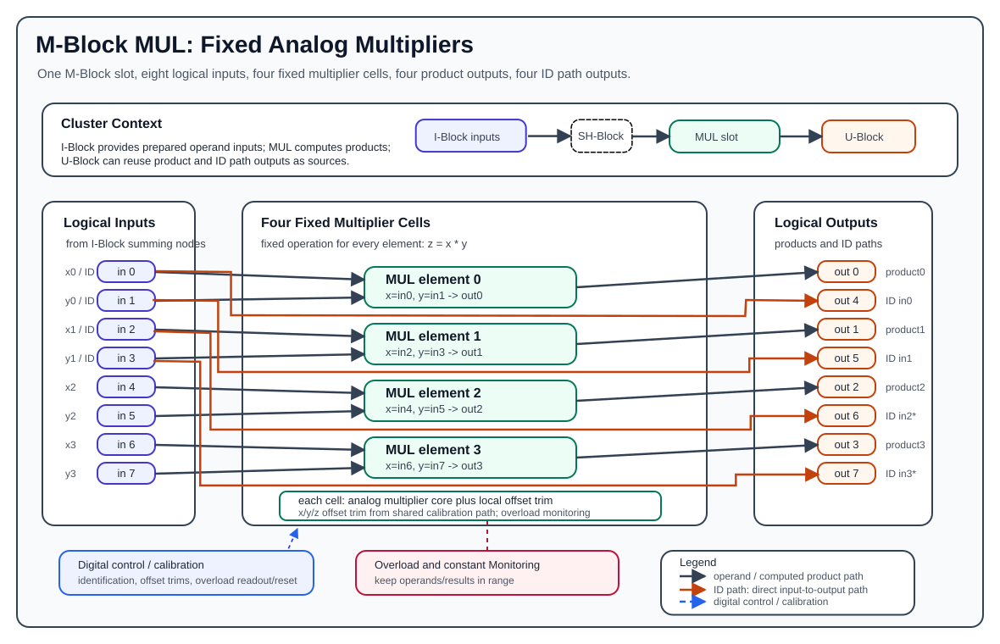

M-Block MUL¶
The M-Block MUL is the fixed-function multiplier M-Block variant. It is an older predecessor of the M-Block MDR and provides four analog multiplication elements in one M-Block slot. Each element accepts two analog operands and produces one multiplication result.
Unlike the MDR block, the MUL block is not operation-selectable. Every computational element is a multiplier:
One MUL block presents the normal M-Block interface of eight logical inputs and eight logical outputs. Internally, the block uses the eight inputs as four operand pairs, computes four products, and exposes four direct identity-style paths from the first two operand pairs.

Hardware Role¶
The MUL block is part of the cluster-local analog computation loop:
- The I-Block forms the logical M-Block input values by summing weighted lane currents.
- The MUL block consumes those logical input values as multiplier operands.
- The MUL block produces analog output voltages on the M-Block output path.
- The U-Block can then select those outputs again as sources for later routes.
The MUL block does not perform source selection, coefficient weighting, lane routing, or summation. Those functions are handled by the U-Block, C-Block, T-Block, and I-Block. The MUL block receives already prepared analog operands and multiplies them.
Element Organization¶
One MUL block contains four multiplier elements:
| Multiplier | x input | y input | Product output |
|---|---|---|---|
0 |
input 0 |
input 1 |
output 0 |
1 |
input 2 |
input 3 |
output 1 |
2 |
input 4 |
input 5 |
output 2 |
3 |
input 6 |
input 7 |
output 3 |
For multiplier i:
Outputs 0..3 are the computed multiplication results. Outputs 4..7 are fixed ID path outputs for the first four local input signals, as described below.
ID Paths¶
The MUL block exposes four direct input-to-output paths called ID paths. They copy the first four local M-Block inputs to the upper output group:
These ID paths are hardware passthrough/loopback paths. They are independent of the multiplier computation and do not consume a multiplier element. They are useful when an operand must remain available elsewhere in the analog program or when calibration and diagnostics need to observe an input-side signal after it has passed through the M-Block output path.
The ID paths only cover the first two multiplier operand pairs. Inputs 4..7, which feed multipliers 2 and 3, do not have corresponding ID path outputs in the public programming model.
When the block is used in the second M-Block slot, local ID outputs 6 and 7 correspond to cluster-level M outputs 14 and 15. In LUCIDAC-style configurations, those outputs can conflict with the constant giver when constants are enabled, because the constant source uses the same physical output positions. Treat those two ID paths as unavailable or shadowed when the constant giver is active.
Multiplier Cell Structure¶
Each multiplier element contains an analog multiplier cell with two operand paths and one result path:
xis the first operand and comes from the even input index.yis the second operand and comes from the following odd input index.zis the product output for that element.- Local x/y input offset paths compensate operand-side offset errors.
- Local z/output offset paths compensate result-side offset errors.
- Overload detection monitors operand and output-related signal ranges.
- Digital control infrastructure provides identification, calibration, overload readout/reset, and trim control.
At documentation level, one multiplier cell can be understood as:
x input -> input conditioning -> offset trim -> multiplier core -> output trim -> z output
y input -> input conditioning -> offset trim ---------^
The four multiplier cells share the block-level control, reference, calibration, and overload infrastructure, but each cell has its own operand pair and product output.
Multiplication Behavior¶
Each element computes:
Use x and y for the analog values actually present at the MUL element inputs. In normal cluster programming, values are routed through the U-Block, C-Block, and I-Block before they reach a MUL input, so the coefficient and route polarity used in pybrid may differ from the mathematical value being documented.
The normalized programming range is:
Example:
The multiplication result must remain inside the valid analog output range. Even though the product of two normalized operands normally remains normalized, offset, calibration error, input polarity, or surrounding-route gain can still produce invalid operating conditions if the analog program is not scaled correctly.
Input And Output Polarity¶
The MUL block documentation should distinguish between mathematical operands and physical/cluster signal polarity. The multiplier equation describes the values at the multiplier cell inputs. pybrid route coefficients describe how values are produced through the cluster routing path.
For example, MUL verification code may route negative coefficients into the cluster input path while expecting a positive mathematical product. That does not mean the multiplier equation is different; it means the surrounding route path and measurement point define the physical signal polarity observed by the test.
When documenting an analog program, state both pieces explicitly when needed:
- The mathematical operands being modeled, such as
x = 0.8andy = 0.7. - The route coefficients and input indices used to produce those operands at the MUL inputs.
Calibration And Offset Trim¶
The MUL block is an analog computation circuit, so calibration is part of normal operation. The hardware provides trim/control support for:
- x operand offset compensation
- y operand offset compensation
- z/result offset compensation
- reference/limit generation used by the multiplier and monitoring circuitry
- overload detection and overload reset/readout
The public pybrid MMulBlock API does not expose these low-level trim values as user-settable fields. pybrid treats the MUL block as a fixed-function M-Block with four multiplication elements. Offset trim, overload reset/readout, and low-level hardware calibration belong to the device firmware and calibration workflow.
Overload And Valid Operating Range¶
The MUL block includes overload-related monitoring for the analog signal paths. Overload should be treated as an invalid computation condition, not as a clipped or saturated mathematical result.
Practical rules:
- Keep both multiplier operands within the normalized analog range.
- Keep the product within the normalized analog output range.
- Avoid route gains that can drive an operand beyond the valid input range.
- Recalibrate or inspect routing if the same mathematical program behaves differently across multiplier elements.
- Treat overload indication as a sign that the analog model scaling, route polarity, or calibration state needs review.
Pybrid Programming¶
In pybrid, the fixed multiplier block is represented by MMulBlock:
MMulBlock is registered as an M-Block type and contains a tuple of four ComputationElement[Multiplication] entries:
There is no per-element operation selector for MMulBlock. The REDAC serializer implementation for MMulBlock is a no-op and emits no block-specific configuration item, because the function is fixed in hardware.
In the standard LUCIDAC-style cluster model, the multiplier block is commonly the second M-Block slot:
With that slot offset, local MUL inputs and outputs map to cluster-level M lanes as follows:
| Local MUL signal | Cluster-level M lane |
|---|---|
input 0..7 |
M input 8..15 |
product output 0..3 |
M output 8..11 |
ID path output 4..7 |
M output 12..15 |
If a MUL block is installed in a different M-Block slot, use that slot's M-lane offset instead of assuming 8.
The general mapping rule is:
For the first M-Block slot, the slot offset is 0. For the second M-Block slot, the slot offset is 8.
Minimal pybrid Example¶
This example configures multiplier 0 by routing two constants into local MUL inputs 0 and 1. It assumes the MUL block is installed as cluster.m1block, so m_offset = 8.
cluster.ublock.reset()
cluster.cblock.reset()
cluster.iblock.reset()
m_offset = 8
cluster.ublock.set_constant(1.0)
cluster.ublock.connect(15, 0, force=True)
cluster.cblock.elements[0].factor = 0.8
cluster.iblock.connect(0, m_offset + 0, force=True)
cluster.ublock.connect(15, 1, force=True)
cluster.cblock.elements[1].factor = 0.7
cluster.iblock.connect(1, m_offset + 1, force=True)
After configuration, multiplier 0 receives approximately x = 0.8 and y = 0.7 at its two logical inputs and computes the product on local output 0, which corresponds to cluster-level M output 8 when the block is installed in the second M-Block slot.